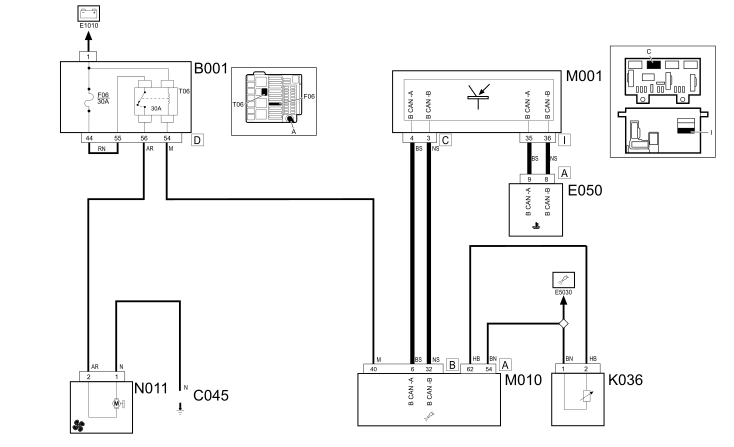

E5020 ENGINE COOLING - WIRING DIAGRAM
- Path
- Electrical equipment > 1 ELECTRICAL FUNCTIONS > E50 ENGINE CONTROL AND MANAGEMENT SYSTEMS > E5020 ENGINE COOLING > E5020 ENGINE COOLING - WIRING DIAGRAM
- Kind
- wiring diagram
- Applies to
- engines: 1.1, 1.2 8v; all production periods
- Interactive page
- https://sloeber94.github.io/elrnDB-fPnd/en/#/169002677
Applies to: engines: 1.1, 1.2 8v; all production periods
Wiring diagram

COMPONENTS
Component code | Description | Reference to the assembly |
|---|---|---|
B1 | Engine compartment junction unit | 5505C |
C45 | Fan earth | - |
D4 | Front/engine coupling | - |
D9 | front/radiator coupling | - |
E50 | Instrument panel | 5560B |
K120 | Linear sensor (for climate control) | 5040B |
K36 | Engine coolant temperature sensor/sender unit | 1056B |
K36 | Engine coolant temperature sensor/sender unit | 1060G |
M1 | Body computer | 5505A |
M10 | Engine management control unit | 1056B |
N11 | Engine fan motor | 1088B |
O10 | Engine fan adjustment resistance | - |